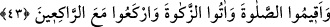
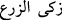
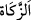
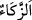

imâmlık yapmak için para almaları, câriye hükmünde olmayan hür hanımların izni
olmaksızın azil[254] yapmak, içki içmekte olan kimselere selâm vermek gibi hükümler bu
kabildendir. Bu tür kolaylıklar getirilmezse, bu işleri yapanların, daha kötü şeylere
yönelebileceğinden korkulur. Nitekim Nisâbu’l-Ahsâb ve diğer bâzı eserlerde böyle
geçmektedir. Mesnevî’de de şöyle gelmiştir.
Âşıklara sevinç ve üzüntü kaynağı mâşûklarıdır.
Onlar için, sevâb, ecir ve hizmet eli hep O’dur.
Mâşûktan başkasına bakanın aşkı aşk olmaz.
Aşk, öyle bir ateştir ki bir kere parlamaya görsün
Mâşûk’ta başka ne varsa hepsini yakıp kül eder.
43. Namazı tam kılın, zekâtı hakkıyla verin, rükû edenlerle beraber rükû edin.
Âyet, İsrâîloğulları’na hıtâb etmekte olup: “Ey İsrâîloğulları! Namazı ve zekâtı kabûl
edin, farziyetine inanın, bu iki ibâdeti müslümanlar gibi şartlarına riâyet ederek edâ
edin; zîrâ onlarınki gibi olmayan namaz ve zekât, makbûl değildir” mânâsınadır.
“Zekât” kelimesinin kökü hakkında iki görüş vardır. Eğer (__WORD__) “mahsûl arttı”
cümlesinde olduğu gibi, zekâtın kökünün “artmak” mânâsına gelen “ez-zekâ” (
)
kökünden alındığını düşünürsek arttı, çoğaldı demektir. Çünkü zekât vermek malı
bereketlendirir; insanı cömertliğe alıştırır. Eğer zekâtın türediği kökün “temizlik”
mânâsına gelen (
) kelimesinden olduğunu söylersek o zaman zekât, “malın
kirlerden, nefsin de cimrilikten temizlenmesi” demektir.
Hanefî mezhebine göre kâfirler, namaz, oruç gibi mü’min olmayandan sâkıt olan
ibâdetlerle emredilemez, yapmadıklarında cezâlandırılmazlar. Onların sorumlu
oldukları husûs; inanmak ve dîni kabûl etmektir. “Rükû edenlerle birlikte rükû edin!”
emrinden maksad inananlara: Mü’minlerin cemâatlerine devam edin; demektir.
Cemâatle kılınan namaz, yalnız kılınan namazdan yirmiyedi derece daha üstündür.
Çünkü cemâat ile müslümanlar bir bakıma güç gösterisi yapmış olurlar. Bu duruma göre
namaz cihâd, mihrab da harp sâhası gibidir. Birlikten güç doğduğu için saf saf savaşa
katılmak lâzımdır. Cemâat kuvvet demektir. Peygamber Efendimiz: “Müslümanlardan
kırk kişi bir cemâatte toplansa aralarından muhakkak birinin günahı afvolunur”[255]
buyurmuştur. Allah Teâlâ, bir kişiyi afvedip de diğerlerini afvetmezlik etmeyecek,
hüsrânda bırakmayacak kadar kerîmdir. Cemâatle kılınan namazın yirmiyedi derece
daha üstün olması şu hikmete mebnîdir: Allah, tek başına namaz kılana, hakkı olan bir
sevâb yerine, fazl ve keremiyle dokuz daha katıp, on sevâb vermektedir. Cemâat
kelimesi, toplanmak mânâsına gelen “cem’” (
) kökünden gelip en az üç kişinin